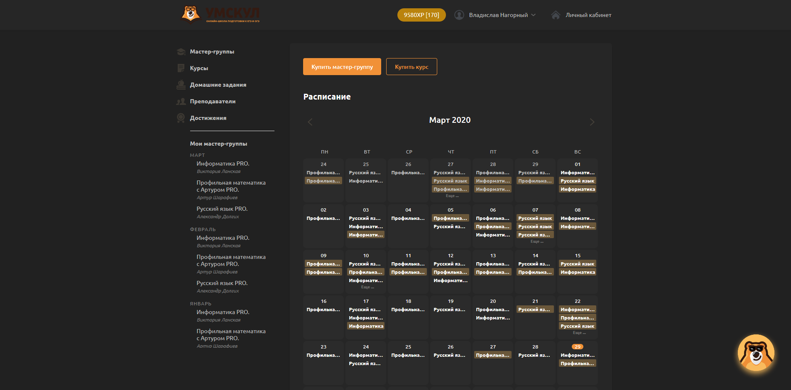
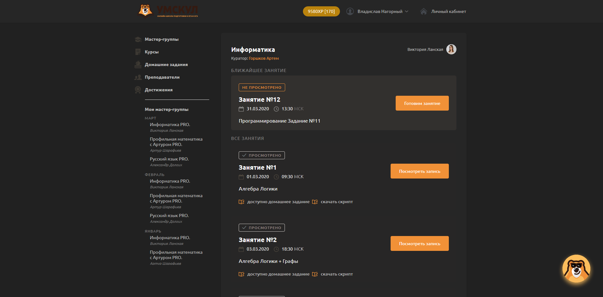

DT Archive
Архив проектов -
Ещё живое
|
[на главную]
Название:
Umschool Script
Источник:
Firefox Addons
Исходный код:
GitHub
ЯП:
CSS
Просто тёмная тема для сайта https://umschool.net.
Также можно попробовать
моё расширение для браузера
.
Скачать расширение для:
Firefox
Скриншоты:
 